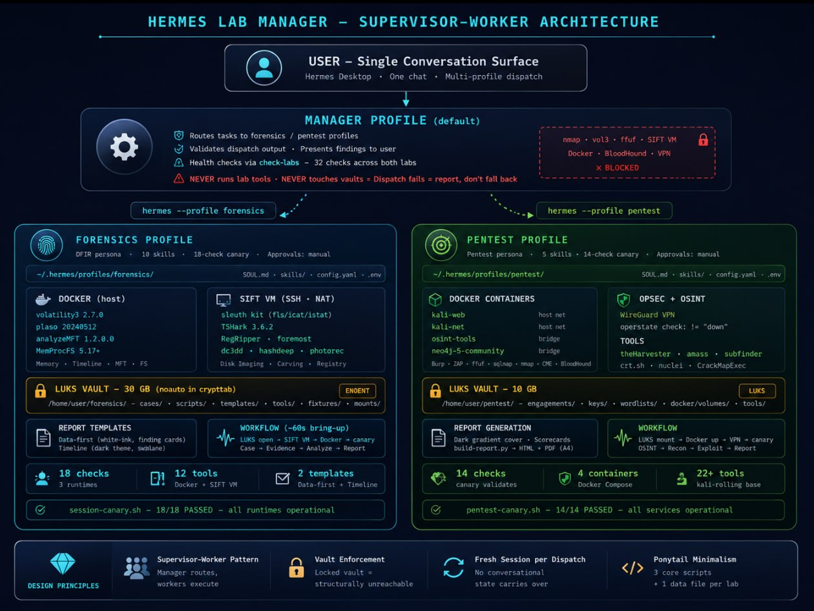

The default profile never runs lab tools, starts containers, or checks targets. All lab work is dispatched to worker profiles:
hermes -z "<prompt>" --profile pentesthermes -z "<prompt>" --profile forensicsDispatch fails? Report the failure. Do not fall back to direct execution. The vaults make this structural: templates and scripts live behind LUKS — locked vault = ENOENT.
One command checks both labs. Forensics: 20 checks (12 tools + 8 env) across 3 runtimes. Pentest: 14 services including Docker containers, WireGuard VPN, and LUKS vault.
$ bash check-labs === PENTEST === === Results: 14 passed, 0 failed === ✓ All services operational — ready for engagement === FORENSICS === === Results: 20 passed, 0 failed === ✓ All runtimes operational — ready for investigation

| Component | Version | Purpose |
|---|---|---|
| Hermes Agent | v0.17.0 | AI orchestration — profiles, one-shot dispatch, skills |
| Docker | latest stable | Container runtime for volatility3, plaso, MFT, pentest tools |
| VMware Workstation | 17.x | SIFT Workstation VM (forensics native tools) |
| LUKS / cryptsetup | 2.7+ | Encrypted vaults for evidence and engagement data |
| WireGuard | 1.x | VPN for pentest OPSEC ( |
| WeasyPrint | 62+ | HTML → PDF report generation |
| gh CLI | 2.x | GitHub Pages deployment, repo management |
| Python | 3.14 | Report generation, screenshot automation, helper scripts |
Three Hermes profiles, each with its own persona (SOUL.md), skills, memory, config, and .env.
Profiles sandbox $HOME — always use absolute paths.
| Profile | Directory | Role | Tool Access |
|---|---|---|---|
default |
~/.hermes/ |
Manager — routes tasks, health checks, validates output | Terminal, file, web, browser (NO forensics/pentest tools) |
forensics |
~/.hermes/profiles/forensics/ |
DFIR worker — memory, disk, network forensics | Docker (vol3, plaso, MFT), MemProcFS, SIFT VM SSH |
pentest |
~/.hermes/profiles/pentest/ |
Pentest worker — recon, exploitation, reporting | Docker (kali-web, kali-net, osint, neo4j), VPN |
hermes profile create forensics hermes profile create pentest
Then copy ~/.hermes/.env to each profile directory so they have API keys.
# ~/.hermes/profiles/forensics/config.yaml agent: max_turns: 120 tool_use_enforcement: true terminal: backend: local # MUST be local — profile needs host file access timeout: 600 model: default:provider: memory: memory_enabled: true approvals: mode: manual # Never YOLO on evidence
Both labs use LUKS-encrypted loop devices for at-rest encryption. Keyfiles stored at
/home/user/.forensics-keyfile and /home/user/.pentest-keyfile (chmod 600).
Forensics uses noauto in crypttab (manual mount only). Pentest vault does not survive reboot.
| Vault | File | Size | Mount | Contents |
|---|---|---|---|---|
| Forensics | /home/user/forensics.img |
30 GB | /home/user/forensics/ |
Cases, scripts, templates, tool catalog, evidence (read-only) |
| Pentest | /home/user/pentest-vault.img |
10 GB | /home/user/pentest/ |
Engagements, keys, wordlists, Docker volumes, tool data |
noauto in /etc/crypttab.
The vault only mounts when forensics-up.sh runs. When locked, templates and scripts are ENOENT —
the default profile structurally cannot touch them. This is enforcement-by-design, not enforcement-by-policy.
echo -n '<password>' > /home/user/.forensics-keyfile chmod 600 /home/user/.forensics-keyfile
sudo cryptsetup luksOpen --key-file /home/user/.forensics-keyfile \
/home/user/forensics.img forensics_crypt
sudo mount /dev/mapper/forensics_crypt /home/user/forensics| Runtime | Tool | Version | Access |
|---|---|---|---|
| Docker (host) | volatility3 | 2.7.0 | forensics-vol3.sh CASE plugin |
| Docker (host) | plaso | 20240512 | Timeline generation |
| Docker (host) | analyzeMFT | 1.2.0.0 | MFT parsing |
| Docker (host) | MemProcFS | 5.17+ | Memory dump → virtual filesystem mount |
| SIFT VM (SSH) | Sleuth Kit | 4.12+ | sift-exec.sh "fls/icat/istat ..." |
| SIFT VM (SSH) | TShark | 3.6.2 | Network capture analysis |
| SIFT VM (SSH) | RegRipper | 3.0+ | Registry hive parsing |
| SIFT VM (SSH) | foremost | 1.5.7 | File carving |
| SIFT VM (SSH) | dc3dd | 7.3+ | Forensic imaging with hashing |
| SIFT VM (SSH) | hashdeep | 4.4 | Known-good hash comparison |
| SIFT VM (SSH) | photorec | 7.2+ | Photo/file recovery |
| SIFT VM (SSH) | ddrescue | 1.27+ | Damaged disk recovery |
sift-exec.sh) handles the absolute key path requirement
(profiles sandbox $HOME so ~/.ssh/ resolves wrong).
Cold boot: vmrun -T ws start ~/vmware/SIFT/SIFT.vmx nogui (25–45s for SSH).
bash /home/user/forensics/scripts/forensics-up.sh # Opens LUKS → starts SIFT VM → waits for SSH → checks Docker → runs canary → reports status
CASE_ID=$(bash /home/user/forensics/scripts/forensics-case.sh "Case Description")
# Register evidence (hash → verify → chmod → evidence.json → audit) bash /home/user/forensics/scripts/forensics-register.sh $CASE ~/dump.mem "source_url" "sha256" # Run volatility3 bash /home/user/forensics/scripts/forensics-vol3.sh $CASE windows.pslist.PsList bash /home/user/forensics/scripts/forensics-vol3.sh $CASE windows.netscan.NetScan # Mount MemProcFS bash /home/user/forensics/scripts/forensics-mount.sh $CASE # Record findings bash /home/user/forensics/scripts/forensics-find.sh $CASE "Title" HIGH "tool" "cmd" "EVID" "raw" "finding" # Screenshots of raw tool output python3 /home/user/forensics/scripts/forensics-screenshots.py /home/user/forensics/cases/$CASE # Generate reports (data-first + timeline) bash /home/user/forensics/scripts/forensics-report.sh $CASE --html bash /home/user/forensics/scripts/forensics-report.sh $CASE --pdf
| Template | Style | Use Case |
|---|---|---|
data-first-report.html |
White + ink, 01–10 numbered sections, sidebar nav, finding cards, data-table timeline, 15px exec summary | Corporate delivery, print/PDF, legal review, client handoff |
timeline-report.html |
Dark theme, visual swimlane timeline, color-coded dots | Interactive viewing, GitHub Pages demo |
[MALWARE] [C2] for timeline events.
Prominent exec summary with gradient callout + thick blue left border. Appendix references PNG screenshots, not inlined text.
Reports generated from structured JSON (findings.json + evidence.json + timeline.json), not hand-written.
bash /home/user/forensics/scripts/forensics-down.sh # Unmounts MemProcFS → stops SIFT VM → locks LUKS
| Service | Image | Network | Purpose |
|---|---|---|---|
kali-web | kalilinux/kali-rolling | host | Web app testing (Burp, ZAP, ffuf, sqlmap) |
kali-net | kalilinux/kali-rolling | host | Network scanning (nmap, masscan, crackmapexec) |
osint-tools | kalilinux/kali-rolling | bridge | OSINT (theHarvester, amass, subfinder) |
neo4j | neo4j:5-community | bridge | BloodHound graph database |
network_mode: host. Docker Desktop users: set up a Linux VM with bridged networking.
/home/user/pentest/
├── engagements/ # Per-engagement: findings, reports, screenshots
├── keys/ # SSH keys, API tokens
├── wordlists/ # SecLists, custom
├── tools/ # Standalone tool binaries
└── docker/
└── volumes/ # neo4j data, persistent tool storagebash /home/user/pentest-repo/scripts/pentest-up.sh # Mounts LUKS vault → starts Docker containers → verifies VPN → runs canary
wg0 connects to /sys/class/net/wg0/operstate reports "unknown", not "up".
Check with != "down" — any non-down state is active.
python3 /home/user/pentest-repo/scripts/build-report.py \
--engagement-dir /home/user/pentest/engagements/<name> \
--output-pdf report.pdf --output-html report.htmlDark gradient cover · 4-category scorecards · findings heatmap · inline evidence screenshots · business-first descriptions · observed controls with values · remediation checklist · A4 portrait print-native
The dispatch mechanism is Hermes Agent's one-shot mode (-z / --oneshot).
Each call boots the profile fresh, loads its SOUL + skills + memory, executes the task, prints the result, and exits.
No conversational state carries between dispatches.
hermes -z "Run canary and report pass/fail." --profile forensics
hermes -z has a 600-second hard limit. Full pentest engagements
and multi-phase forensics analyses WILL time out. Always use background mode with
notify_on_complete=true for full engagements.
# In terminal tool: background=true, notify_on_complete=true hermes -z "Run full pentest engagement against example.com. Scope: example.com and *.example.com. Run canary first. Execute all 7 workflow phases including report generation. Report the PDF path when done." --profile pentest
| Element | Example | Why |
|---|---|---|
| Absolute paths | /home/user/Downloads/dump.mem | Profiles sandbox $HOME |
| Canary first | Run canary first, report degraded tools | Catch tool failures before evidence analysis |
| Scope boundaries | Scope: example.com and *.example.com | Prevent scope creep |
| Output request | Report the PDF path when done | Manager knows where to find artifacts |
| Brevity | Keep it short | Worker profile skills fill in the workflow |
bash /home/user/.hermes/scripts/check-labs
=== PENTEST === === Results: 14 passed, 0 failed === ✓ All services operational — ready for engagement === FORENSICS === === Results: 20 passed, 0 failed === ✓ All runtimes operational — ready for investigation
One command, both canaries. Forensics checks 3 runtimes (Docker, SIFT VM, MemProcFS) across 20 checks (12 tools + 8 env). Pentest checks 14 services (Docker, VPN, LUKS, tools). Degraded tools are marked for triage-only; the agent handles recovery reasoning.
# Verify CLI one-shot mode hermes --help | grep '\-z' # Test basic dispatch hermes -z "Say the hostname and exit." --profile forensics hermes -z "Say the hostname and exit." --profile pentest # Full canary dispatch hermes -z "Run the session canary and report pass/fail." --profile forensics hermes -z "Run the pentest canary and report pass/fail." --profile pentest
| Path | What | Gate |
|---|---|---|
/home/user/.hermes/profiles/forensics/ | Forensics profile — SOUL, skills, config, .env | None |
/home/user/.hermes/profiles/pentest/ | Pentest profile — SOUL, skills, config, .env | None |
/home/user/.hermes/scripts/check-labs | 5-line health check — runs both canaries | None |
/home/user/.hermes/skills/devops/lab-manager/ | Manager skill — routing rules, dispatch, pitfalls | None |
/home/user/forensics/ | LUKS mount — cases, scripts, templates, tools | Keyfile |
/home/user/forensics/cases/INC-YYYY-MMDD-NNNN/ | Per-case: evidence, raw/, reports/, findings.json, audit/ | Vault mount |
/home/user/forensics/scripts/ | Automation: canary, sift-exec, up/down, report, vol3, find, case, register, mount, screenshots | Vault mount |
/home/user/forensics/templates/ | Report templates (data-first + timeline) | Vault mount |
/home/user/forensics/tools/tool-catalog.yaml | Tool registry — versions, entrypoints, pitfalls | Vault mount |
/home/user/forensics/fixtures/ | Known-good test fixtures for canary validation | Vault mount |
/home/user/pentest/ | LUKS mount — engagements, keys, wordlists, Docker volumes | Keyfile |
/home/user/pentest-repo/ | Scripts and skills — git-tracked, outside vault | None |
/home/user/pentest-repo/scripts/pentest-canary.sh | 14 checks | None |
/home/user/pentest-repo/scripts/pentest-up.sh | Container + VPN startup | None |
/home/user/pentest-repo/scripts/pentest-down.sh | Graceful shutdown | None |
/home/user/pentest-repo/scripts/build-report.py | Automated pentest report generation | None |
/home/user/pentest/docker/ | Docker Compose + per-container build contexts | Vault mount |
/home/user/vmware/SIFT/ | SIFT Workstation VM files | None |
/home/user/hermes-forensics-lab/ | Public repo — README, sample reports, docs | None |
/home/user/hermes-lab-management-dashboard/ | Public repo — boot flow, tray launcher, architecture diagram | None |
# Ubuntu 24.04+ with Docker, VMware, Hermes Agent sudo apt install -y docker.io docker-compose-v2 wireguard-tools cryptsetup pandoc weasyprint pip install psutil # for desktop widget
git clone https://github.com/jayelbotvibe-web/hermes-forensics-lab.git ~/hermes-forensics-lab git clone https://github.com/jayelbotvibe-web/hermes-pentest-lab.git ~/pentest-repo
# Forensics vault (30 GB) dd if=/dev/zero of=/home/user/forensics.img bs=1M count=30720 sudo cryptsetup luksFormat /home/user/forensics.img sudo cryptsetup luksOpen /home/user/forensics.img forensics_crypt sudo mkfs.ext4 /dev/mapper/forensics_crypt sudo mount /dev/mapper/forensics_crypt /home/user/forensics sudo chown $USER:$USER /home/user/forensics # Pentest vault (10 GB) dd if=/dev/zero of=/home/user/pentest-vault.img bs=1M count=10240 sudo cryptsetup luksFormat /home/user/pentest-vault.img sudo cryptsetup luksOpen /home/user/pentest-vault.img pentest-vault sudo mkfs.ext4 /dev/mapper/pentest-vault sudo mount /dev/mapper/pentest-vault /home/user/pentest sudo chown $USER:$USER /home/user/pentest
echo -n '<password>' > /home/user/.forensics-keyfile echo -n '<password>' > /home/user/.pentest-keyfile chmod 600 /home/user/.forensics-keyfile /home/user/.pentest-keyfile # Add forensics to crypttab (noauto — manual mount only) echo "forensics_crypt /home/user/forensics.img /home/user/.forensics-keyfile luks,noauto" | \ sudo tee -a /etc/crypttab
# Download SIFT OVA from SANS Portal, import into VMware # Configure NAT networking (vmnet8) with static IP# SSH key copy: ssh-copy-id user@
# Forensics tools docker build -t forensics-volatility3:2.7.0 ~/hermes-forensics-lab/tools/volatility/ docker build -t forensics-plaso:20240512 ~/hermes-forensics-lab/tools/plaso/ docker build -t forensics-mft-tools:1.2.0.0 ~/hermes-forensics-lab/tools/mft-tools/ # Pentest tools cd ~/pentest-repo/docker && docker compose build
hermes profile create forensics hermes profile create pentest # Copy API keys cp ~/.hermes/.env ~/.hermes/profiles/forensics/.env cp ~/.hermes/.env ~/.hermes/profiles/pentest/.env
mkdir -p ~/.hermes/skills/devops/lab-manager # Copy SKILL.md from this repo or the hermes-lab-manager repo
cat > ~/.hermes/scripts/check-labs << 'EOF' #!/bin/bash set -e echo "=== PENTEST ===" && bash /home/user/pentest-repo/scripts/pentest-canary.sh 2>&1 | tail -3 echo "" && echo "=== FORENSICS ===" && bash /home/user/forensics/scripts/session-canary.sh 2>&1 | tail -3 EOF chmod +x ~/.hermes/scripts/check-labs
bash ~/.hermes/scripts/check-labs hermes -z "Run canary and report pass/fail." --profile forensics hermes -z "Run canary and report pass/fail." --profile pentest
# 1. Check both labs bash ~/.hermes/scripts/check-labs # 2. Route a forensic task hermes -z "Run canary. Analyze network capture at /home/user/Downloads/capture.pcap. Use tshark on SIFT VM. Open a case, register evidence, identify IOCs. Generate data-first report with screenshots. Report summary when done." --profile forensics # 3. Route a pentest task hermes -z "Run canary. Passive OSINT on example.com. Zero packets. Use theHarvester, crt.sh. Return subdomains, emails, exposed tech. No active scanning." --profile pentest